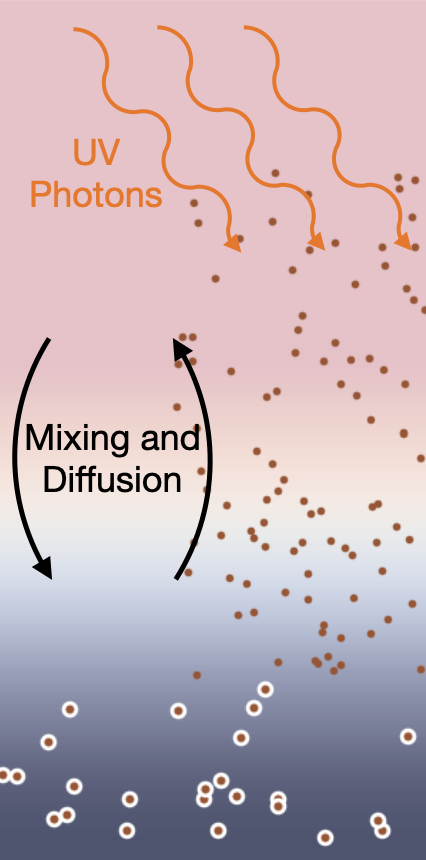
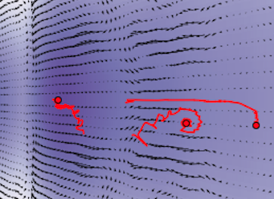

Current Research
Disk chemistry and dyanmic feedbacks
Protoplanetary disks, the disk of gas and solids around a star where planets form, are constantly evolving. Growth transport of gas and solids can lead to dramatic changes in the observed chemistry and the composition of the planetary bodies that form within. I have created a new software, CANDY, to explore the combined effects of active gas phase Chemistry ANd DYnamics of solid particles. I am exploring implications of this feedback in meteoritics, disk observations, and exoplanet compositions.
See:
Van Clepper et al. 2022Solid dynamics in structured disks
As massive planet grow, they carve out a gap in the surrounding disk, halting the radial transport of solids. I'm interested in studying the detailed trajectory of these solids has they move both radially and vertically through a disk with a growing massive planet. I am currently developing a software to track tracer particles through a 3D hydrodynamic disk mesh, to explore Jupiter's role in creating and/or preserving heterogeneities in solar system meteorites.
See:
Price, Van Clepper & Ciesla 2024Van Clepper, Price & Ciesla 2025